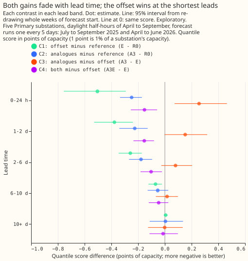
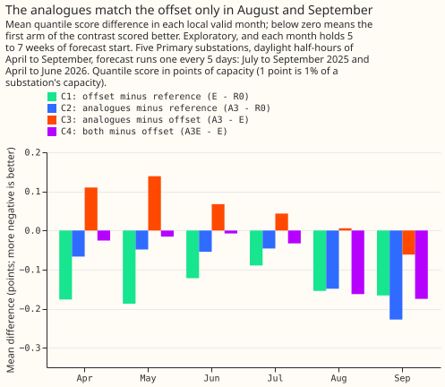
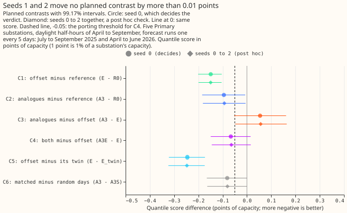

Experiment 74: do same-time analogues add anything once the solar forecast is explicit? (AN1)
Take-home message: telling the XGBoost model of a Primary substation's power about sunshine, in
either of two ways, lowered its daylight error by 0.09 to 0.15 points, and the two ways help in
different conditions. One point is 1% of the substation's capacity. The explicit forecast of the
solar panels' output wins at leads under 2 days (a lead is the time from the forecast start to the
half-hour being forecast) and on cloudy rows (rows with a clear-sky index under 0.3, which is the
ratio of the measured sunshine to the cloud-free sunshine). The analogues, which are recent days at
the same time of day with similar sunshine, match the explicit forecast on sunny rows and in August
and September. Using both scored best, at 4.518 points against 4.584 for the explicit forecast
alone, but one validation year (the 12 months from July 2025 to June 2026) cannot resolve a gain
that small. The next test needs more forecast weeks and one new variant, analogues matched on the
day type alone. The verdict is inconclusive.
We asked how to tell a forecast of a Primary substation's power about the sunshine. A Primary substation steps 33 kV or 66 kV down to 11 kV in the electricity distribution network. Solar panels behind the substation's meter cut the metered power on a sunny day, so the forecast needs the sunshine. We tried two ways on five substations over daylight half-hours of April to September. A row is one half-hour forecast of one substation from one forecast run. In the explicit way, the panels' output is forecast as their capacity times the forecast sunshine, with a fitted weight, and the XGBoost model receives that output as a starting offset: a value added to the model's prediction for each row before its trees. The forecast sunshine comes from the European Centre for Medium-Range Weather Forecasts ensemble (ENS). In the analogue way, we search the recent days for the 3 whose measured sunshine was closest to the sunshine forecast for the target, among days at the same half-hour and of the same day type (working day, weekend, or bank holiday). The measured sunshine is a satellite-based estimate, CAMS, from the Copernicus Atmosphere Monitoring Service. The XGBoost model then receives the metered power on those 3 days as input columns. We refitted the XGBoost model every month on the latest year of data for both ways. Experiment 34 found that a model that is never refitted overstates the value of an input that follows the recent level of power. Both ways beat the same monthly refit without either input. The explicit way beat it by 0.15 points, and the analogue way by 0.095 points. The experiment could not tell which way is better, and could not tell whether the analogues add anything once the offset is in the model.
Legend of the arms. R0 is the monthly refit without either input, the reference. E is the
refit with the explicit offset. E_twin is E given the sunshine forecast of another date, a
placebo that keeps the capacity and the spread of the sunshine and removes its timing. A1, A3,
and A5 are the refits with 1, 3, and 5 analogues. A3E has the 3 analogues and the offset.
A3S has 3 days drawn at random from the same recent days, ignoring sunshine and day type, a
placebo for the matching. R0_rad is R0 plus the radiation inputs, a context arm. The analogue
columns are the mean and the standard deviation of the 3 days' power, the mean gap in sunshine, and
the number of days found.
The planned contrasts
The decision rule was committed before any code ran. The rule has six contrasts on the quantile
score, an error measure where lower is better. Every contrast is a paired difference of two arms'
scores, with whole weeks of forecast start resampled, and every interval is 99.17% (a 5% error
split across six). Seed 0 decides the verdict. C3 is the head-to-head contrast. C4 asks whether the
analogues add anything once the offset is in, and needs its upper end below -0.05 to be worth
porting, which means building the analogue columns in the live service. The rule has four verdicts.
refuted needs C3's upper end below zero or C4's upper end below -0.05. supported needs
C1's upper end below zero, C3's lower end above zero, and C4's lower end at or above -0.05. small
gain is the same as supported except that C4's upper end is below zero. Neither of the first two
is met, so the verdict is inconclusive: C3 runs from -0.053 to +0.161, and C4 from -0.149 to
+0.015.
| Contrast | Arm minus arm | Difference | 99.17% interval |
|---|---|---|---|
| C1 | E (offset) minus R0 (reference) |
-0.149 | -0.201 to -0.104 |
| C2 | A3 (3 analogues) minus R0 |
-0.095 | -0.185 to -0.007 |
| C3 | A3 minus E |
+0.054 | -0.053 to +0.161 |
| C4 | A3E (both) minus E |
-0.066 | -0.149 to +0.015 |
| C5 | E minus E_twin (offset from another date) |
-0.246 | -0.322 to -0.173 |
| C6 | A3 minus A3S (3 random days) |
-0.081 | -0.165 to +0.001 |
The values are differences in quantile score, in points of capacity. A negative value favours the first arm. The rows are 68,903 rows from 29 weeks of forecast start, at five Primary substations anonymised as D9, D10, D11, D14, and D16, one forecast run every 5 days in July to September 2025 and April to June 2026. Every interval except C1's has a half-width above the 0.05 porting threshold, so C4 could not rule out a gain of that size. The half-width is half the interval's width: 0.05 (C1), 0.09 (C2), 0.11 (C3), 0.08 (C4), 0.07 (C5), and 0.08 (C6).

The arms' absolute scores sit close together, and the pairing is what separates them. Scores are in points of capacity, with 95% intervals from resampling whole weeks:
| Arm | Quantile score |
|---|---|
R0, reference |
4.734 (4.441 to 5.057) |
E, explicit offset |
4.584 (4.302 to 4.909) |
E_twin, offset from another date |
4.830 (4.531 to 5.159) |
A1, 1 analogue |
4.631 (4.338 to 4.952) |
A3, 3 analogues |
4.639 (4.343 to 4.960) |
A5, 5 analogues |
4.673 (4.367 to 5.006) |
A3E, 3 analogues and the offset |
4.518 (4.229 to 4.832) |
A3S, 3 random days |
4.720 (4.431 to 5.040) |
R0_rad, reference plus radiation inputs (context) |
4.614 (4.338 to 4.933) |
For context, three frozen models of experiment 64 score 4.620 (d0, its best guess), 4.723 (d1l,
the best guess without radiation inputs), and 4.466 (am, the offset model) on the same rows. They
carry the 14-day correction, an average of the recent forecast errors added to the forecast, so no
contrast uses them.
The offset wins at short leads and on cloudy rows; the analogues catch up on sunny rows

Both gains are largest within 2 days of the forecast start and are gone from 10 days, and the offset gains more at the shortest leads. At leads under 48 hours, C1 is -0.439 (95% interval -0.578 to -0.306) and C2 is -0.237 (-0.316 to -0.172), so C3 is +0.203 (+0.060 to +0.346). The analogues add to the offset in that range: C4 is -0.153 (-0.227 to -0.086). From 10 days, no contrast differs from zero. All reads on this page other than C1 to C6 are exploratory, at 95%.
The split by sunshine shows why the two ways differ. On cloudy rows (a clear-sky index under 0.3), the analogues trail the offset by 0.429 points (0.224 to 0.657). On sunny rows (an index of 0.7 or more), C3 is -0.050 (-0.199 to +0.098) and C4 is -0.138 (-0.251 to -0.023). On these 5 substations' rows, the forecast sunshine helped most on cloudy days, and a similar past day helped most on sunny days. By substation, C3 favours the offset at D9 (+0.166, +0.066 to +0.269) and D11 (+0.101, +0.051 to +0.153), and is under 0.04 in size, in either direction, at D14 and D16.

By month, the analogues match the offset only in August and September. C3 is +0.110, +0.139, +0.067, and +0.043 in April to July, +0.006 in August, and -0.062 in September, so the analogues trail the offset in the first four months. C4 is -0.163 in August and -0.175 in September. The monthly figures are means of each month's differences, each from 5 to 7 weeks of forecast start. The 95% intervals are in the printed report, and most of C3's include zero.
Other reads
Every read in this list is exploratory, at 95%, except C5 and C6, which are planned and use 99.17%.
- Matching probably helps on sunny rows.
A3againstA3S, the 3 random days, is -0.081 (-0.165 to +0.001) over all rows (C6, planned), so the upper end is a hair above zero. The gain from matching is -0.197 (-0.275 to -0.130) at leads under 48 hours and -0.188 (-0.307 to -0.060) on sunny rows. On cloudy rows the contrast is +0.137 (+0.002 to +0.293), which means that matched analogues are worse than random days there. - One analogue scored as well as three.
A1minusA3is -0.008 (-0.037 to +0.019), andA5minusA3is +0.034 (+0.014 to +0.060). - The offset adds to the analogues.
A3EminusA3, the offset's gain on top of the analogues, is -0.121 (-0.157 to -0.086). - The offset carries solar information. C5 (planned) shows the offset beats its twin by 0.246 (0.173 to 0.322), and experiment 64 found the same direction (0.300).
- At night the analogues are close to random days. At night rows of April to September,
A3minusA3Sis -0.020 (-0.042 to +0.002),A3minusR0is -0.006 (-0.030 to +0.017), andEminusR0is +0.004 (-0.001 to +0.009). - Radiation inputs help the reference too.
R0_radminusR0is -0.120 (-0.151 to -0.090), a context read that no contrast uses. - Coverage. The 0.05 quantile lies above the actual power on 13.5% to 15.0% of sunny rows in every arm, and the 0.95 quantile lies above it on 80.6% to 82.9% of cloudy rows.
- No analogue exists for 8.7% of rows (a bank holiday, or no day of the same type with observed power and CAMS data in the window), and 89.4% of rows have all 3.

Seeds 1 and 2 changed no planned contrast by more than 0.003 points. The widths of the
intervals come from the weeks of forecast start, not from fit noise. The verdict from seeds 0 to 2
together is also inconclusive (C3 lower end -0.048, C4 upper end +0.016). The seed check is post
hoc.
Which predictions held
| Prediction made in the plan | Result |
|---|---|
| C1 at -0.10 to -0.25 | Held: -0.149 |
| C2 at -0.02 to -0.10 | Held, at the end of the range: -0.095 |
E beats A3 by 0.03 to 0.20 |
Held in the point estimate (+0.054); the interval includes zero |
| C4 within -0.03 to +0.02 | Not met: -0.066, with an interval from -0.149 to +0.015 |
E_twin worse than E by 0.15 to 0.35 |
Held: 0.246 |
A3S worse than A3 by 0.01 to 0.06 |
Not met: 0.081, slightly beyond the range |
A3 and A3S within 0.02 at night |
Not met, at the edge: -0.020 (-0.042 to +0.002) |
Departures from the plan
The experiment departed from its plan in four ways, none of which changes the hypothesis, the prediction, or the decision rule.
- A ninth arm,
R0_rad, was fitted as context. It enters no contrast. - Seeds 1 and 2 were fitted after the verdict, as a post hoc check.
- The prediction sets are stored under lower-case names,
r0,e,a3, and so on, for seed 0, and with the suffix-s012for seeds 0 to 2, because a stored set cannot be overwritten. - The common starting level is the median of the training labels, not zero. Experiments 76
and 78 found that starting from XGBoost's estimated base score raises the score by 0.07 to 0.10
points against a start at zero in the same pipeline. The plan gave every arm one common level so
that the contrasts do not
carry that effect. Whether a start at zero would change
R0, or the ranking of the arms, is not tested.
Limits that the plan stated hold. The capacity table is experiment 64's and is 5% to 19% below
experiment 45's 2025/26 values, which experiment 78 found worsens am by about 0.02 points. The
weights
and the sunshine calibration are fixed on data to 2025-06-30. The analogues are matched in training
to the ensemble-mean sunshine and at inference to each member's own, which widens the pooled spread
of the analogue arms. The candidates share a half-hour of the day in Coordinated Universal Time
(UTC), so a window that straddles a clock
change shifts a local-time profile by an hour. The placebo twin of E is a cyclic shift over the
whole window's rows. A donor for a row from the early window may therefore be a forecast issued
after that refit. Only a sunshine anomaly crosses that boundary. No power or label does.
What the next experiment should answer
The next experiment should test the analogue columns on top of the offset with more forecast weeks, one analogue, and a variant matched on the day type alone. A second validation year with as many weeks (experiment R11, which needs the ENS backfill) would cut the half-width of C4 from 0.08 to about 0.06, because the half-width falls with the square root of the number of weeks. That is still above 0.05, so the plan should either set the threshold near 0.06 or ask for a third year. The plan should also read sunny and cloudy rows separately and add the day-type-only variant, because C6 does not separate the sunshine from the day type. The decision whether to port either way belongs to the maintainer and the roadmap. The offset costs a table of capacities and weights. The analogue columns cost the last 3 to 16 days of telemetry, a CAMS-like sunshine record, and a bank-holiday calendar at every forecast.
Reproducing the figures
uv run python ml-experiments/00074-an1-same-time-analogues-vs-explicit-solar-forecast-demand/e00074_inputs.py --part post_u
uv run python ml-experiments/00074-an1-same-time-analogues-vs-explicit-solar-forecast-demand/e00074_inputs.py --part shape --check
uv run python ml-experiments/00074-an1-same-time-analogues-vs-explicit-solar-forecast-demand/e00074_fit.py --prepare D9
# repeat the line above for D10, D11, D14, and D16
bash ml-experiments/00074-an1-same-time-analogues-vs-explicit-solar-forecast-demand/e00074_run.sh 0 1 2
uv run python ml-experiments/00074-an1-same-time-analogues-vs-explicit-solar-forecast-demand/e00074_assemble.py
uv run python ml-experiments/00074-an1-same-time-analogues-vs-explicit-solar-forecast-demand/e00074_stats.py --seeds 0 --tag seed0
uv run python ml-experiments/00074-an1-same-time-analogues-vs-explicit-solar-forecast-demand/e00074_stats.py --seeds 0 1 2 --tag seeds012
uv run python ml-experiments/00074-an1-same-time-analogues-vs-explicit-solar-forecast-demand/e00074_charts.py
npx svgo@4 --multipass --precision=1 --final-newline figure_*.svg
e00074_stats.py prints every number on this page. The code is in
ml-experiments/00074-an1-same-time-analogues-vs-explicit-solar-forecast-demand/.
Reviews
Plan review (Sonnet), triaged. Accepted: give every arm one starting level, state the rule that
separates small gain from supported, rebuild the training inputs for the whole P-roll window,
state how E_twin is trained, note the column-count difference between arms, one definition of day
type, and the prose faults. Rejected: none.
Code review (Sonnet), triaged. No leakage and no wrong join. Accepted: add the ninth arm to the
plan, make the guard in known_rows check the origin as well as the valid time, and state the
mismatch between the training and inference sunshine shape. Rejected: a check of an A3 variant
matched to the ensemble-mean shape at inference, because the arm of experiment 64 shares the same
design and the experiment answers the plan's question without it.
Number check (Sonnet), triaged. Accepted: the September value, the context scores copied from experiment 74's own printout, the night prediction row, the half-width range, the exploratory labels, the claim that the monthly figures have no interval, and the unsupported statement that a second year would resolve a 0.05-point gain. Rejected: none.
Prose review (Sonnet), triaged. Accepted: an opening that defines every term before use, a legend of the arms, the four verdicts, the pronoun and bare-noun fixes, the money-metaphor fixes, and the research-log rewrites. Rejected: moving all the legend ahead of the take-home paragraph, which would bury the conclusion.